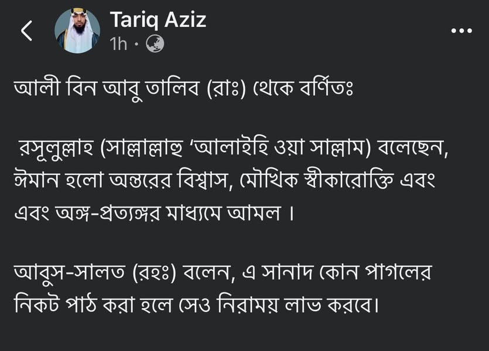

নিজেদের পক্ষে কোনো সহিহ হাদিস না-থাকলে জাল/বাতিল হাদিসের দ্বারস্থ হওয়া ছাড়া উপায়…
২১ নভেম্বর, ২০২৪
নিজেদের পক্ষে কোনো সহিহ হাদিস না-থাকলে জাল/বাতিল হাদিসের দ্বারস্থ হওয়া ছাড়া উপায় থাকে না। তারেক ভাই'র পোস্টে আলি রা. থেকে বর্ণিত এ হাদিস কোনোভাবেই সহিহ বা হাসান প্রমাণিত হয় না।
#প্রথমত, হাদিসের রাবি 'আবুস সালত আল-হারাবি' মুত্তাহাম বিল-কাজিব অর্থাৎ হাদিস জাল করার অভিযোগে অভিযুক্ত।
তবুও পোস্টে এমনকিছু মুতাবাআত দেখানো হয়েছে, যেগুলো মুতাবাআত হওয়ার যোগ্যই নয়। কেননা মুতাবাআতের অন্যতম শর্ত হচ্ছে— বর্ণনাটি জয়িফ জিদ্দান না-হওয়া। আর পোস্টের সকল বর্ণনা জয়িফ জিদ্দান। কোনোটি জাল। যে কারণে এটিকে সহিহ প্রমাণের কসরত যেন খড়কুটোর ওপর ভর করে সাগর পাড়ি দেয়ার প্রচেষ্টা।
#দ্বিতীয় কথা, ইবনু মায়িনের যে তা'দিন দেখানো হয়েছে, তা এখানে গ্রহণযোগ্য নয়। কেননা আবুস সালতের ব্যাপারে অন্যান্য ইমামের জরাহটি মুফাসসার, যা উসূল অনুসারে তা'দিলের উপর অগ্রগণ্য।
#তৃতীয়ত, 'আবুস সালত' যিনি মুত্তাহাম বিন-কাজিব, তিনিই আবার তার (স্বরচিত) বর্ণনাকে তাসহিহ করছেন, এরচে' হাস্যকর বিষয় আর কী হতে পারে!
ইমাম আহমদ রাহ. থেকে উক্ত হাদিস তাসহিহ করার যে বর্ণনা, সেটিও প্রমাণিত নয়। মোদ্দাকথা, এটিকে সহিহ বা হাসান দাবি করা ভিত্তিহীন ও মনগড়া বৈ কিছু না। (বিস্তারিত তাহকিক কমেন্ট বক্সে পাবেন।)
নিজেদের পক্ষে কোনো সহিহ হাদিস না-থাকলে জাল/বাতিল হাদিসের দ্বারস্থ হওয়া ছাড়া উপায় থাকে না। তারেক ভাই'র পোস্টে আলি রা. থেকে বর্ণিত এ হাদিস কোনোভাবেই সহিহ বা হাসান প্রমাণিত হয় না।
#প্রথমত, হাদিসের রাবি 'আবুস সালত আল-হারাবি' মুত্তাহাম বিল-কাজিব অর্থাৎ হাদিস জাল করার অভিযোগে অভিযুক্ত।
তবুও পোস্টে এমনকিছু মুতাবাআত দেখানো হয়েছে, যেগুলো মুতাবাআত হওয়ার যোগ্যই নয়। কেননা মুতাবাআতের অন্যতম শর্ত হচ্ছে— বর্ণনাটি জয়িফ জিদ্দান না-হওয়া। আর পোস্টের সকল বর্ণনা জয়িফ জিদ্দান। কোনোটি জাল। যে কারণে এটিকে সহিহ প্রমাণের কসরত যেন খড়কুটোর ওপর ভর করে সাগর পাড়ি দেয়ার প্রচেষ্টা।
#দ্বিতীয় কথা, ইবনু মায়িনের যে তা'দিন দেখানো হয়েছে, তা এখানে গ্রহণযোগ্য নয়। কেননা আবুস সালতের ব্যাপারে অন্যান্য ইমামের জরাহটি মুফাসসার, যা উসূল অনুসারে তা'দিলের উপর অগ্রগণ্য।
#তৃতীয়ত, 'আবুস সালত' যিনি মুত্তাহাম বিন-কাজিব, তিনিই আবার তার (স্বরচিত) বর্ণনাকে তাসহিহ করছেন, এরচে' হাস্যকর বিষয় আর কী হতে পারে!
ইমাম আহমদ রাহ. থেকে উক্ত হাদিস তাসহিহ করার যে বর্ণনা, সেটিও প্রমাণিত নয়। মোদ্দাকথা, এটিকে সহিহ বা হাসান দাবি করা ভিত্তিহীন ও মনগড়া বৈ কিছু না। (বিস্তারিত তাহকিক কমেন্ট বক্সে পাবেন।)
